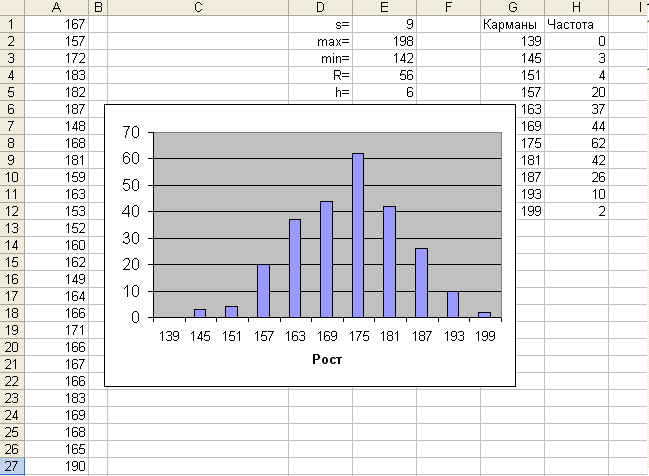
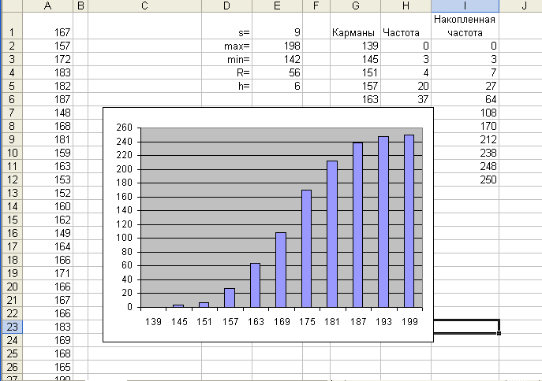
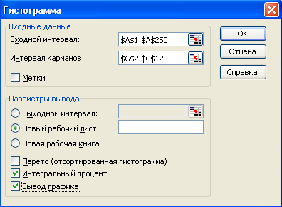

ЛАБОРАТОРНАЯ РАБОТА № LR-03
ПОСТРОЕНИЕ ГИСТОГРАММ
Теоретические сведения:
Задача : В ходе обследования состояния
здоровья населения было произведено измерение
роста по выборке из 250 человек. Соответствующие
данные хранятся в файле lr-3.xls
на вкладке "Рост". Представьте данные
о законе распределения вариант в графическом
виде.
Задание 1: Использование функции =ЧАСТОТА()
- Постройте интервальный ряд распределения:
- оцените число интервалов группировки s
по формуле Стерджеса s=1+3,322lg n. Для того, чтобы
полученное число было целым, воспользуйтесь
функцией =ОКРУГЛ();
- найдите минимальную и максимальную
варианты выборки;
- вычислите размах вариации R=xmax-xmin
и размер интервала группировки (кармана) h=R/s;
- вычислите границы интервалов
группировки (карманов);
Примечание: желательно, чтобы нижняя
граница первого кармана была меньше минимальной
варианты, а верхняя граница последнего - больше
максимального. Поэтому при вычислении нижней
границы первого кармана положите ее равной xmin-h/2.
- используя функцию =ЧАСТОТА(), вычислите
число вариант, попавших в каждый из интервалов
группировки;
Примечание: формулу для частоты нужно вводить как формулу
массива: сначала выделите диапазон, в котором будут помещаться результаты
вычислений; затем введите формулу (например, =ЧАСТОТА(A1:A250;G2:G12) для
случая, изображенного на рисунке ниже); в конце нажмите CTRL+SHIFT+ENTER.
- постройте по полученным данным
гистограмму.
Если Вы все сделали верно, Ваш рабочий лист будет
похож на этот рисунок:

Рис. 1
- Вычислите накопленные частоты и постройте
соответствующую гистограмму. Должна получиться
гистограмма, напоминающая следующий рисунок:

Рис. 2
Задание 2: Использование инструмента
"Гистограмма" надстройки "Анализ
данных"
- Оцените число интервалов группировки s по
формуле Стерджеса s=1+3,322lg n. Для того, чтобы
полученное число было целым, воспользуйтесь
функцией =ОКРУГЛ().
- Найдите минимальную и максимальную варианты
выборки.
- Вычислите размах вариации R=xmax-xmin
и размер интервала группировки (кармана) h=R/s.
- Вычислите границы интервалов группировки
(карманов).
Примечание: желательно, чтобы нижняя
граница первого кармана была меньше минимальной
варианты, а верхняя граница последнего - больше
максимального. Поэтому при вычислении нижней
границы первого кармана положите ее равной xmin-h/2.
- Используя инструмент "Гистограмма"
надстройки "Анализ данных" , найдите
эмпирические частоты распределения.
Примечание: если Ваши данные на рабочем
листе расположены так же, как на рис.1, то
заполните поля в окне "Гистограмма" так, как
это показано на рисунке:

Рассчитанные данные будут выведены на
вновь созданный рабочий лист с именем
"Гистограмма".
- Используя данные из столбца "Интегральный
процент", найдите накопленные частоты.